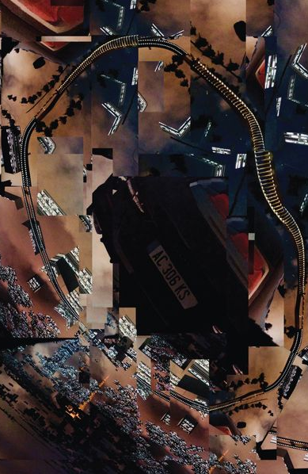
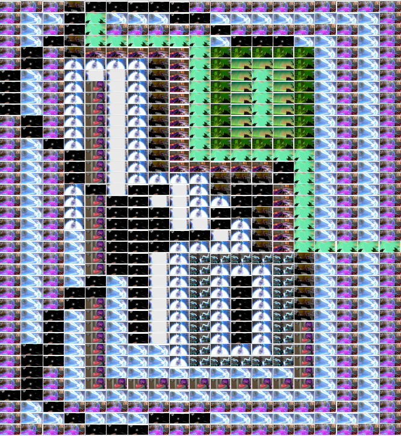
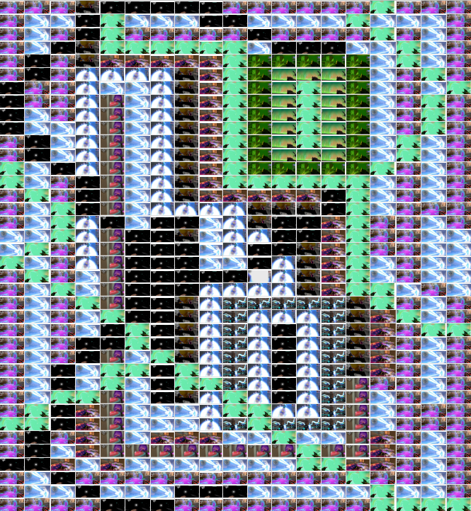
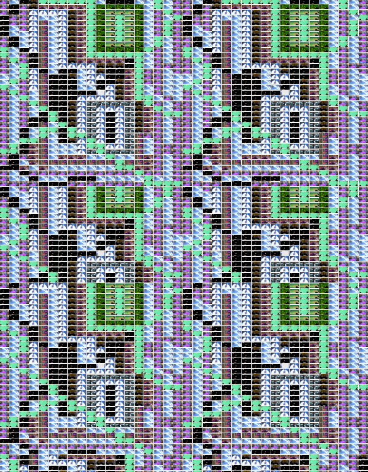
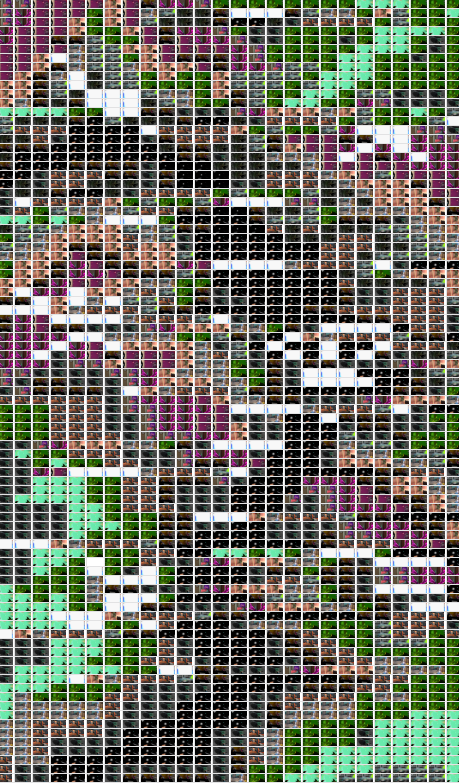
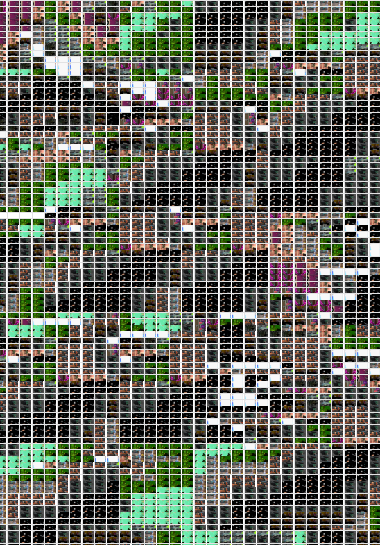
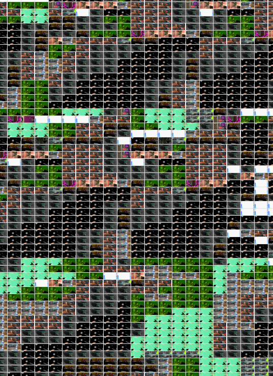
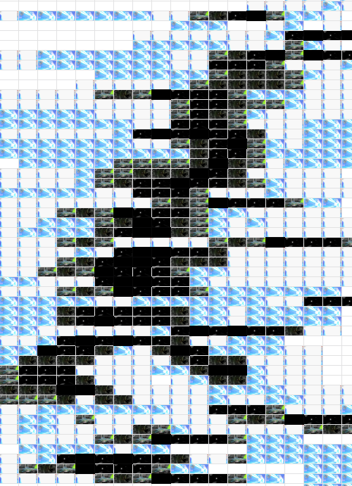
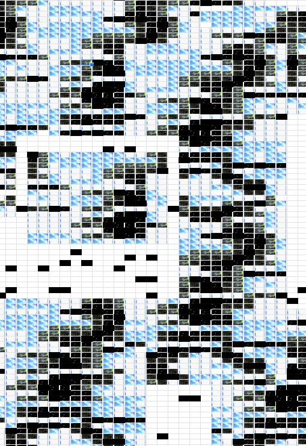
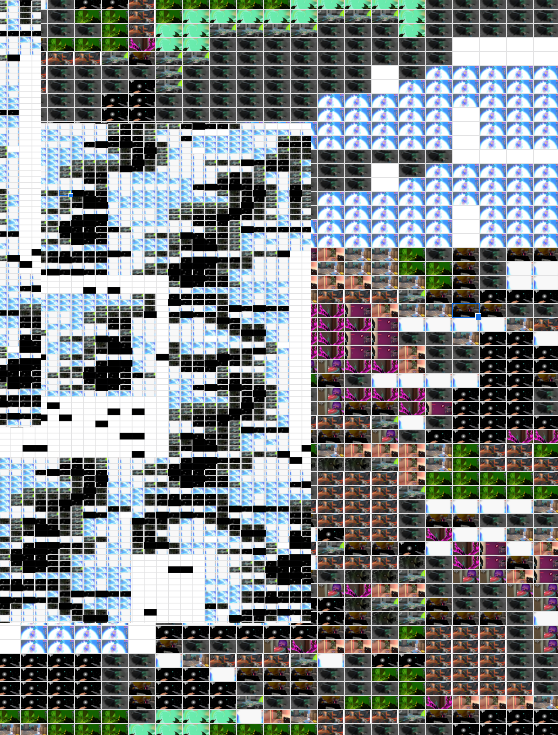

PROJECT 1:
CONFOUNDING TOOLS
The objective for this project was to design a 24” x 36” digital poster about
your life under COVID 19 without using software explicitly intended for design.
WHAT IS THIS?
For my poster I decided to work with screenshots from an FPS game called Valorant, and I used
Google Sheets to structuralize my poster.
FINAL POSTER, GOOGLE SHEETS
I was inspired by this poster that was shown as an example from previous work. I really liked the idea
of how this poster shows a black hole and it feels like I'm floating around the poster just like the
objects around it with a sense of being lost and disconnected. I got the
idea of using Valorant for my poster since I spent a lot of time playing during quarantine and
staying home the past year. I intended to show how the game played a huge part of my daily
routine and took up so much of my time by conveying that feeling of being sucked into a new
video game.

WORK FROM PREVIOUS YEARS
INSPIRATION:
PROCESS:
At first I experimented with the colours of my screenshots to create an image, then duplicating it
and creating patterns. Every single image was 8x4, but as I was experimenting with different
compositions, I noticed that they looked too even and organized which was not my intent. I also
thought filling the entire sheet was too much and began to look similar to each other. Later on I
screenshotted the same photos at random sizes which would create different sized white gaps
in every cell on the graph and use more white space in my composition. At first I wanted to
create a black hole, but I played around with distorting my composition randomly which began to
create a glitch-like effect which I really liked because I began to think about how covid-19 is sort
of a glitch that happened in our life. I also stopped trying to add such bright colours to my poster
and focused more on the darker/muted colours to create a gradation from the black, as well as
paying more attention to the shapes that the black squares were making and how it contributed
to my intent.








